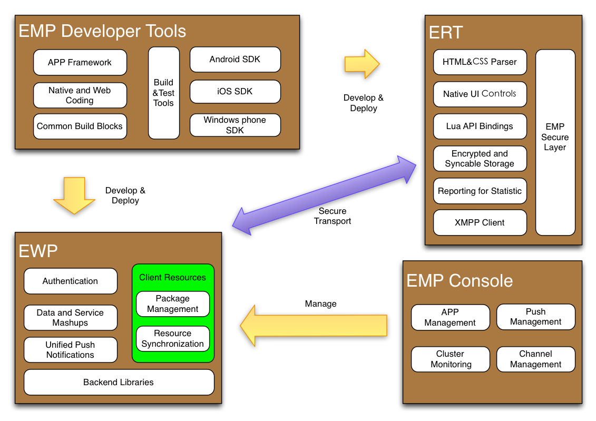
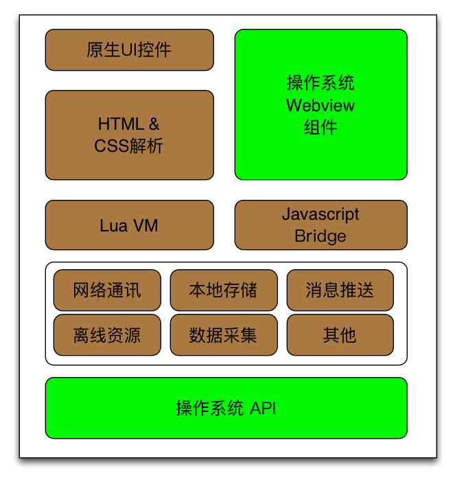
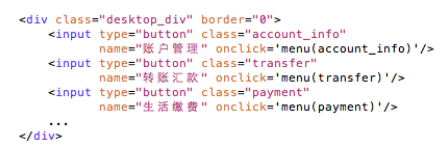
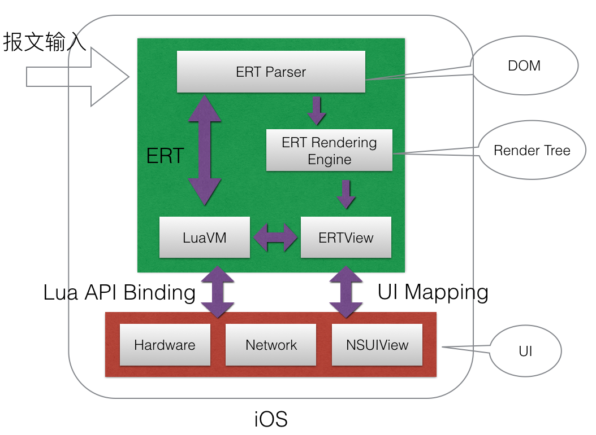
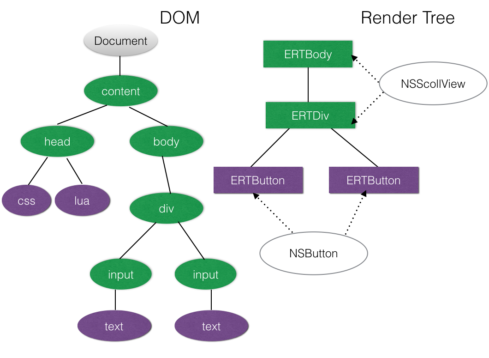
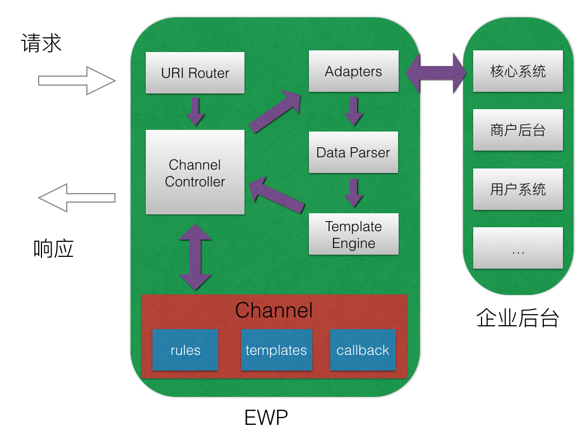
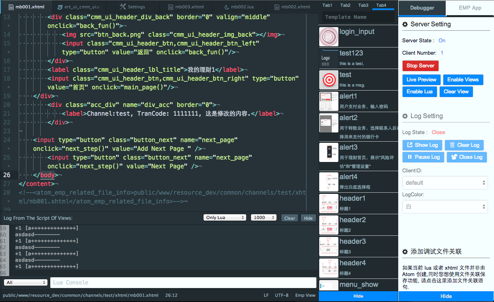
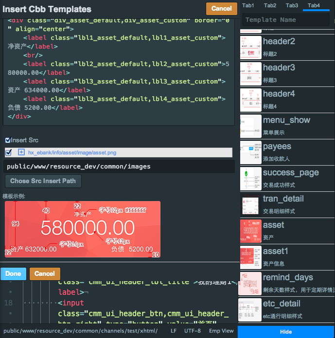

<!DOCTYPE HTML>
<html lang="en-US" >
    
    <head>
        
        <meta charset="UTF-8">
        <meta http-equiv="X-UA-Compatible" content="IE=11; IE=10; IE=9; IE=8; IE=7; IE=EDGE" />
        <title>EMP5.3技术白皮书 | EMP参考手册</title>
        <meta content="text/html; charset=utf-8" http-equiv="Content-Type">
        <meta name="description" content="">
        <meta name="generator" content="GitBook 1.3.4">
        <meta name="HandheldFriendly" content="true"/>
        <meta name="viewport" content="width=device-width, initial-scale=1, user-scalable=no">
        <meta name="apple-mobile-web-app-capable" content="yes">
        <meta name="apple-mobile-web-app-status-bar-style" content="black">
        <link rel="apple-touch-icon-precomposed" sizes="152x152" href="../gitbook/images/apple-touch-icon-precomposed-152.png">
        <link rel="shortcut icon" href="../gitbook/images/favicon.ico" type="image/x-icon">
        
    
    
    
    <link rel="prev" href="../index.html" />
    

        
    </head>
    <body>
        
        
<link rel="stylesheet" href="../gitbook/style.css">


        
    <div class="book" data-level="1" data-basepath=".." data-revision="1476433301244">
    

<div class="book-summary">
    <div class="book-search">
        <input type="text" placeholder="Type to search" class="form-control" />
    </div>
    <ul class="summary">
        
    	
    	
    	

        

        
    
        
        <li class="chapter " data-level="0" data-path="index.html">
            
                
                    <a href="../index.html">
                        <i class="fa fa-check"></i>
                        
                         Introduction
                    </a>
                
            
            
        </li>
    
        
        <li class="chapter active" data-level="1" data-path="overview/EMP5.3TechnologyWhitePapers.html">
            
                
                    <a href="../overview/EMP5.3TechnologyWhitePapers.html">
                        <i class="fa fa-check"></i>
                        
                            <b>1.</b>
                        
                         EMP5.3技术白皮书
                    </a>
                
            
            
        </li>
    
        
        <li class="chapter " data-level="2" >
            
            <span><b>2.</b> EMP 安全</span>
            
            
            <ul class="articles">
                
    
        
        <li class="chapter " data-level="2.1" data-path="emp_security/emp_security_channel.html">
            
                
                    <a href="../emp_security/emp_security_channel.html">
                        <i class="fa fa-check"></i>
                        
                            <b>2.1.</b>
                        
                         EMP加密信道
                    </a>
                
            
            
        </li>
    

            </ul>
            
        </li>
    
        
        <li class="chapter " data-level="3" >
            
            <span><b>3.</b> Release Note</span>
            
            
            <ul class="articles">
                
    
        
        <li class="chapter " data-level="3.1" data-path="release_note/release_note_5.3.69.html">
            
                
                    <a href="../release_note/release_note_5.3.69.html">
                        <i class="fa fa-check"></i>
                        
                            <b>3.1.</b>
                        
                         增强版 5.3.69R
                    </a>
                
            
            
            <ul class="articles">
                
    
        
        <li class="chapter " data-level="3.1.1" data-path="release_note/ewp/release_note_5.3.69.html">
            
                
                    <a href="../release_note/ewp/release_note_5.3.69.html">
                        <i class="fa fa-check"></i>
                        
                            <b>3.1.1.</b>
                        
                         EWP
                    </a>
                
            
            
        </li>
    

            </ul>
            
        </li>
    
        
        <li class="chapter " data-level="3.2" data-path="release_note/release_note_5.3.83.html">
            
                
                    <a href="../release_note/release_note_5.3.83.html">
                        <i class="fa fa-check"></i>
                        
                            <b>3.2.</b>
                        
                         增强版 5.3.83R
                    </a>
                
            
            
            <ul class="articles">
                
    
        
        <li class="chapter " data-level="3.2.1" data-path="release_note/ewp/release_note_5.3.69-83.html">
            
                
                    <a href="../release_note/ewp/release_note_5.3.69-83.html">
                        <i class="fa fa-check"></i>
                        
                            <b>3.2.1.</b>
                        
                         EWP (5.3.69~83)
                    </a>
                
            
            
        </li>
    

            </ul>
            
        </li>
    
        
        <li class="chapter " data-level="3.3" data-path="release_note/release_note_5.3.148.html">
            
                
                    <a href="../release_note/release_note_5.3.148.html">
                        <i class="fa fa-check"></i>
                        
                            <b>3.3.</b>
                        
                         增强版 5.3.148B
                    </a>
                
            
            
            <ul class="articles">
                
    
        
        <li class="chapter " data-level="3.3.1" data-path="release_note/ewp/release_note_5.3.83R-128R.html">
            
                
                    <a href="../release_note/ewp/release_note_5.3.83R-128R.html">
                        <i class="fa fa-check"></i>
                        
                            <b>3.3.1.</b>
                        
                         EWP (5.3.83R~128R)
                    </a>
                
            
            
        </li>
    
        
        <li class="chapter " data-level="3.3.2" data-path="release_note/ewp/release_note_5.3.128R-148B.html">
            
                
                    <a href="../release_note/ewp/release_note_5.3.128R-148B.html">
                        <i class="fa fa-check"></i>
                        
                            <b>3.3.2.</b>
                        
                         EWP (5.3.128R~148B)
                    </a>
                
            
            
        </li>
    

            </ul>
            
        </li>
    
        
        <li class="chapter " data-level="3.4" data-path="release_note/release_note_5.3.158.html">
            
                
                    <a href="../release_note/release_note_5.3.158.html">
                        <i class="fa fa-check"></i>
                        
                            <b>3.4.</b>
                        
                         5.3.158B
                    </a>
                
            
            
            <ul class="articles">
                
    
        
        <li class="chapter " data-level="3.4.1" data-path="release_note/ewp/release_note_5.3.148B-158B.html">
            
                
                    <a href="../release_note/ewp/release_note_5.3.148B-158B.html">
                        <i class="fa fa-check"></i>
                        
                            <b>3.4.1.</b>
                        
                         EWP (5.3.148B~158B)
                    </a>
                
            
            
        </li>
    

            </ul>
            
        </li>
    
        
        <li class="chapter " data-level="3.5" data-path="release_note/release_note_5.3.161.html">
            
                
                    <a href="../release_note/release_note_5.3.161.html">
                        <i class="fa fa-check"></i>
                        
                            <b>3.5.</b>
                        
                         5.3.161B
                    </a>
                
            
            
            <ul class="articles">
                
    
        
        <li class="chapter " data-level="3.5.1" data-path="release_note/ewp/release_note_5.3.158B-161B.html">
            
                
                    <a href="../release_note/ewp/release_note_5.3.158B-161B.html">
                        <i class="fa fa-check"></i>
                        
                            <b>3.5.1.</b>
                        
                         EWP (5.3.158B~161B)
                    </a>
                
            
            
        </li>
    

            </ul>
            
        </li>
    

            </ul>
            
        </li>
    
        
        <li class="chapter " data-level="4" data-path="special_issues/Introduction.html">
            
                
                    <a href="../special_issues/Introduction.html">
                        <i class="fa fa-check"></i>
                        
                            <b>4.</b>
                        
                         EMP产品已知问题列表
                    </a>
                
            
            
            <ul class="articles">
                
    
        
        <li class="chapter " data-level="4.1" data-path="special_issues/SpecialIssues.html">
            
                
                    <a href="../special_issues/SpecialIssues.html">
                        <i class="fa fa-check"></i>
                        
                            <b>4.1.</b>
                        
                         通用问题
                    </a>
                
            
            
        </li>
    
        
        <li class="chapter " data-level="4.2" data-path="special_issues/SpecialIssues_EWP.html">
            
                
                    <a href="../special_issues/SpecialIssues_EWP.html">
                        <i class="fa fa-check"></i>
                        
                            <b>4.2.</b>
                        
                         EWP
                    </a>
                
            
            
        </li>
    
        
        <li class="chapter " data-level="4.3" data-path="special_issues/SpecialIssues_iOS.html">
            
                
                    <a href="../special_issues/SpecialIssues_iOS.html">
                        <i class="fa fa-check"></i>
                        
                            <b>4.3.</b>
                        
                         iOS
                    </a>
                
            
            
        </li>
    
        
        <li class="chapter " data-level="4.4" data-path="special_issues/SpecialIssues_Android.html">
            
                
                    <a href="../special_issues/SpecialIssues_Android.html">
                        <i class="fa fa-check"></i>
                        
                            <b>4.4.</b>
                        
                         Android
                    </a>
                
            
            
        </li>
    

            </ul>
            
        </li>
    
        
        <li class="chapter " data-level="5" data-path="emp_ui_reference/README.html">
            
                
                    <a href="../emp_ui_reference/README.html">
                        <i class="fa fa-check"></i>
                        
                            <b>5.</b>
                        
                         EMP界面开发规范
                    </a>
                
            
            
            <ul class="articles">
                
    
        
        <li class="chapter " data-level="5.1" data-path="section_README.html">
            
                
                    <a href="../section_README.html">
                        <i class="fa fa-check"></i>
                        
                            <b>5.1.</b>
                        
                         变更记录
                    </a>
                
            
            
            <ul class="articles">
                
    
        
        <li class="chapter " data-level="5.1.1" data-path="emp_ui_reference/changelog/changelog_5.3.41.html">
            
                
                    <a href="../emp_ui_reference/changelog/changelog_5.3.41.html">
                        <i class="fa fa-check"></i>
                        
                            <b>5.1.1.</b>
                        
                         5.2到5.3基础版（5.3.41）的变更记录
                    </a>
                
            
            
        </li>
    
        
        <li class="chapter " data-level="5.1.2" data-path="emp_ui_reference/changelog/changelog_5.3.69.html">
            
                
                    <a href="../emp_ui_reference/changelog/changelog_5.3.69.html">
                        <i class="fa fa-check"></i>
                        
                            <b>5.1.2.</b>
                        
                         5.3基础版到5.3增强版（5.3.69R）的变更记录
                    </a>
                
            
            
        </li>
    
        
        <li class="chapter " data-level="5.1.3" data-path="emp_ui_reference/changelog/changelog_5.3.128.html">
            
                
                    <a href="../emp_ui_reference/changelog/changelog_5.3.128.html">
                        <i class="fa fa-check"></i>
                        
                            <b>5.1.3.</b>
                        
                         5.3增强版（5.3.69R）到5.3增强版（5.3.128R）的变更记录
                    </a>
                
            
            
        </li>
    

            </ul>
            
        </li>
    
        
        <li class="chapter " data-level="5.2" data-path="emp_ui_reference/FAQ.html">
            
                
                    <a href="../emp_ui_reference/FAQ.html">
                        <i class="fa fa-check"></i>
                        
                            <b>5.2.</b>
                        
                         FAQ
                    </a>
                
            
            
        </li>
    
        
        <li class="chapter " data-level="5.3" data-path="emp_ui_reference/css/css_introduction.html">
            
                
                    <a href="../emp_ui_reference/css/css_introduction.html">
                        <i class="fa fa-check"></i>
                        
                            <b>5.3.</b>
                        
                         CSS样式
                    </a>
                
            
            
            <ul class="articles">
                
    
        
        <li class="chapter " data-level="5.3.1" data-path="emp_ui_reference/css/CSS.html">
            
                
                    <a href="../emp_ui_reference/css/CSS.html">
                        <i class="fa fa-check"></i>
                        
                            <b>5.3.1.</b>
                        
                         样式介绍
                    </a>
                
            
            
        </li>
    

            </ul>
            
        </li>
    
        
        <li class="chapter " data-level="5.4" data-path="emp_ui_reference/property/property_introduction.html">
            
                
                    <a href="../emp_ui_reference/property/property_introduction.html">
                        <i class="fa fa-check"></i>
                        
                            <b>5.4.</b>
                        
                         属性
                    </a>
                
            
            
            <ul class="articles">
                
    
        
        <li class="chapter " data-level="5.4.1" data-path="emp_ui_reference/property/Property.html">
            
                
                    <a href="../emp_ui_reference/property/Property.html">
                        <i class="fa fa-check"></i>
                        
                            <b>5.4.1.</b>
                        
                         属性介绍
                    </a>
                
            
            
        </li>
    
        
        <li class="chapter " data-level="5.4.2" data-path="emp_ui_reference/property/control_global_property.html">
            
                
                    <a href="../emp_ui_reference/property/control_global_property.html">
                        <i class="fa fa-check"></i>
                        
                            <b>5.4.2.</b>
                        
                         工程配置属性介绍
                    </a>
                
            
            
        </li>
    

            </ul>
            
        </li>
    
        
        <li class="chapter " data-level="5.5" data-path="section_README.html">
            
                
                    <a href="../section_README.html">
                        <i class="fa fa-check"></i>
                        
                            <b>5.5.</b>
                        
                         界面标签
                    </a>
                
            
            
            <ul class="articles">
                
    
        
        <li class="chapter " data-level="5.5.1" data-path="emp_ui_reference/html_tags/tag_binding.html">
            
                
                    <a href="../emp_ui_reference/html_tags/tag_binding.html">
                        <i class="fa fa-check"></i>
                        
                            <b>5.5.1.</b>
                        
                         控件支持属性和样式对照表
                    </a>
                
            
            
        </li>
    
        
        <li class="chapter " data-level="5.5.2" data-path="section_README.html">
            
                
                    <a href="../section_README.html">
                        <i class="fa fa-check"></i>
                        
                            <b>5.5.2.</b>
                        
                         基础标签
                    </a>
                
            
            
            <ul class="articles">
                
    
        
        <li class="chapter " data-level="5.5.2.1" data-path="emp_ui_reference/html_tags/A.html">
            
                
                    <a href="../emp_ui_reference/html_tags/A.html">
                        <i class="fa fa-check"></i>
                        
                            <b>5.5.2.1.</b>
                        
                         A
                    </a>
                
            
            
        </li>
    
        
        <li class="chapter " data-level="5.5.2.2" data-path="emp_ui_reference/html_tags/B &amp; Strong.html">
            
                
                    <a href="../emp_ui_reference/html_tags/B &amp; Strong.html">
                        <i class="fa fa-check"></i>
                        
                            <b>5.5.2.2.</b>
                        
                         B &amp; Strong
                    </a>
                
            
            
        </li>
    
        
        <li class="chapter " data-level="5.5.2.3" data-path="emp_ui_reference/html_tags/Body.html">
            
                
                    <a href="../emp_ui_reference/html_tags/Body.html">
                        <i class="fa fa-check"></i>
                        
                            <b>5.5.2.3.</b>
                        
                         Body
                    </a>
                
            
            
        </li>
    
        
        <li class="chapter " data-level="5.5.2.4" data-path="emp_ui_reference/html_tags/Br.html">
            
                
                    <a href="../emp_ui_reference/html_tags/Br.html">
                        <i class="fa fa-check"></i>
                        
                            <b>5.5.2.4.</b>
                        
                         Br
                    </a>
                
            
            
        </li>
    
        
        <li class="chapter " data-level="5.5.2.5" data-path="emp_ui_reference/html_tags/Div.html">
            
                
                    <a href="../emp_ui_reference/html_tags/Div.html">
                        <i class="fa fa-check"></i>
                        
                            <b>5.5.2.5.</b>
                        
                         Div
                    </a>
                
            
            
        </li>
    
        
        <li class="chapter " data-level="5.5.2.6" data-path="emp_ui_reference/html_tags/Form.html">
            
                
                    <a href="../emp_ui_reference/html_tags/Form.html">
                        <i class="fa fa-check"></i>
                        
                            <b>5.5.2.6.</b>
                        
                         Form
                    </a>
                
            
            
        </li>
    
        
        <li class="chapter " data-level="5.5.2.7" data-path="emp_ui_reference/html_tags/I &amp; Em.html">
            
                
                    <a href="../emp_ui_reference/html_tags/I &amp; Em.html">
                        <i class="fa fa-check"></i>
                        
                            <b>5.5.2.7.</b>
                        
                         I &amp; Em
                    </a>
                
            
            
        </li>
    
        
        <li class="chapter " data-level="5.5.2.8" data-path="emp_ui_reference/html_tags/Img.html">
            
                
                    <a href="../emp_ui_reference/html_tags/Img.html">
                        <i class="fa fa-check"></i>
                        
                            <b>5.5.2.8.</b>
                        
                         Img
                    </a>
                
            
            
        </li>
    
        
        <li class="chapter " data-level="5.5.2.9" data-path="emp_ui_reference/html_tags/InputButton.html">
            
                
                    <a href="../emp_ui_reference/html_tags/InputButton.html">
                        <i class="fa fa-check"></i>
                        
                            <b>5.5.2.9.</b>
                        
                         InputButton
                    </a>
                
            
            
        </li>
    
        
        <li class="chapter " data-level="5.5.2.10" data-path="emp_ui_reference/html_tags/InputCheckbox.html">
            
                
                    <a href="../emp_ui_reference/html_tags/InputCheckbox.html">
                        <i class="fa fa-check"></i>
                        
                            <b>5.5.2.10.</b>
                        
                         InputCheckbox
                    </a>
                
            
            
        </li>
    
        
        <li class="chapter " data-level="5.5.2.11" data-path="emp_ui_reference/html_tags/InputHidden.html">
            
                
                    <a href="../emp_ui_reference/html_tags/InputHidden.html">
                        <i class="fa fa-check"></i>
                        
                            <b>5.5.2.11.</b>
                        
                         InputHidden
                    </a>
                
            
            
        </li>
    
        
        <li class="chapter " data-level="5.5.2.12" data-path="emp_ui_reference/html_tags/InputPassword.html">
            
                
                    <a href="../emp_ui_reference/html_tags/InputPassword.html">
                        <i class="fa fa-check"></i>
                        
                            <b>5.5.2.12.</b>
                        
                         InputPassword
                    </a>
                
            
            
        </li>
    
        
        <li class="chapter " data-level="5.5.2.13" data-path="emp_ui_reference/html_tags/InputRadio.html">
            
                
                    <a href="../emp_ui_reference/html_tags/InputRadio.html">
                        <i class="fa fa-check"></i>
                        
                            <b>5.5.2.13.</b>
                        
                         InputRadio
                    </a>
                
            
            
        </li>
    
        
        <li class="chapter " data-level="5.5.2.14" data-path="emp_ui_reference/html_tags/InputSegment.html">
            
                
                    <a href="../emp_ui_reference/html_tags/InputSegment.html">
                        <i class="fa fa-check"></i>
                        
                            <b>5.5.2.14.</b>
                        
                         InputSegment
                    </a>
                
            
            
        </li>
    
        
        <li class="chapter " data-level="5.5.2.15" data-path="emp_ui_reference/html_tags/InputSwitch.html">
            
                
                    <a href="../emp_ui_reference/html_tags/InputSwitch.html">
                        <i class="fa fa-check"></i>
                        
                            <b>5.5.2.15.</b>
                        
                         InputSwitch
                    </a>
                
            
            
        </li>
    
        
        <li class="chapter " data-level="5.5.2.16" data-path="emp_ui_reference/html_tags/InputText.html">
            
                
                    <a href="../emp_ui_reference/html_tags/InputText.html">
                        <i class="fa fa-check"></i>
                        
                            <b>5.5.2.16.</b>
                        
                         InputText
                    </a>
                
            
            
        </li>
    
        
        <li class="chapter " data-level="5.5.2.17" data-path="emp_ui_reference/html_tags/Label.html">
            
                
                    <a href="../emp_ui_reference/html_tags/Label.html">
                        <i class="fa fa-check"></i>
                        
                            <b>5.5.2.17.</b>
                        
                         Label
                    </a>
                
            
            
        </li>
    
        
        <li class="chapter " data-level="5.5.2.18" data-path="emp_ui_reference/html_tags/Richtext.html">
            
                
                    <a href="../emp_ui_reference/html_tags/Richtext.html">
                        <i class="fa fa-check"></i>
                        
                            <b>5.5.2.18.</b>
                        
                         Richtext
                    </a>
                
            
            
        </li>
    
        
        <li class="chapter " data-level="5.5.2.19" data-path="emp_ui_reference/html_tags/Select &amp; Option.html">
            
                
                    <a href="../emp_ui_reference/html_tags/Select &amp; Option.html">
                        <i class="fa fa-check"></i>
                        
                            <b>5.5.2.19.</b>
                        
                         Select &amp; Option
                    </a>
                
            
            
        </li>
    
        
        <li class="chapter " data-level="5.5.2.20" data-path="emp_ui_reference/html_tags/Table &amp; Tr &amp; Td &amp; Th.html">
            
                
                    <a href="../emp_ui_reference/html_tags/Table &amp; Tr &amp; Td &amp; Th.html">
                        <i class="fa fa-check"></i>
                        
                            <b>5.5.2.20.</b>
                        
                         Table &amp; Tr &amp; Td &amp; Th
                    </a>
                
            
            
        </li>
    
        
        <li class="chapter " data-level="5.5.2.21" data-path="emp_ui_reference/html_tags/Webview.html">
            
                
                    <a href="../emp_ui_reference/html_tags/Webview.html">
                        <i class="fa fa-check"></i>
                        
                            <b>5.5.2.21.</b>
                        
                         Webview
                    </a>
                
            
            
        </li>
    

            </ul>
            
        </li>
    
        
        <li class="chapter " data-level="5.5.3" data-path="emp_ui_reference/html_tags/sdkexplain.html">
            
                
                    <a href="../emp_ui_reference/html_tags/sdkexplain.html">
                        <i class="fa fa-check"></i>
                        
                            <b>5.5.3.</b>
                        
                         SDK定制说明
                    </a>
                
            
            
        </li>
    
        
        <li class="chapter " data-level="5.5.4" data-path="emp_ui_reference/html_tags/CustomizeTag.html">
            
                
                    <a href="../emp_ui_reference/html_tags/CustomizeTag.html">
                        <i class="fa fa-check"></i>
                        
                            <b>5.5.4.</b>
                        
                         定制标签
                    </a>
                
            
            
            <ul class="articles">
                
    
        
        <li class="chapter " data-level="5.5.4.1" data-path="emp_ui_reference/html_tags/pies.html">
            
                
                    <a href="../emp_ui_reference/html_tags/pies.html">
                        <i class="fa fa-check"></i>
                        
                            <b>5.5.4.1.</b>
                        
                         饼状图
                    </a>
                
            
            
        </li>
    
        
        <li class="chapter " data-level="5.5.4.2" data-path="emp_ui_reference/html_tags/barPlot.html">
            
                
                    <a href="../emp_ui_reference/html_tags/barPlot.html">
                        <i class="fa fa-check"></i>
                        
                            <b>5.5.4.2.</b>
                        
                         柱状图
                    </a>
                
            
            
        </li>
    
        
        <li class="chapter " data-level="5.5.4.3" data-path="emp_ui_reference/html_tags/linePlot.html">
            
                
                    <a href="../emp_ui_reference/html_tags/linePlot.html">
                        <i class="fa fa-check"></i>
                        
                            <b>5.5.4.3.</b>
                        
                         折线图
                    </a>
                
            
            
        </li>
    

            </ul>
            
        </li>
    

            </ul>
            
        </li>
    
        
        <li class="chapter " data-level="5.6" data-path="emp_ui_reference/layout/layout_introduction.html">
            
                
                    <a href="../emp_ui_reference/layout/layout_introduction.html">
                        <i class="fa fa-check"></i>
                        
                            <b>5.6.</b>
                        
                         布局与刷新
                    </a>
                
            
            
            <ul class="articles">
                
    
        
        <li class="chapter " data-level="5.6.1" data-path="emp_ui_reference/layout/emp_layout.html">
            
                
                    <a href="../emp_ui_reference/layout/emp_layout.html">
                        <i class="fa fa-check"></i>
                        
                            <b>5.6.1.</b>
                        
                         页面布局规则
                    </a>
                
            
            
        </li>
    
        
        <li class="chapter " data-level="5.6.2" data-path="emp_ui_reference/layout/emp_layout_table.html">
            
                
                    <a href="../emp_ui_reference/layout/emp_layout_table.html">
                        <i class="fa fa-check"></i>
                        
                            <b>5.6.2.</b>
                        
                         Table布局规则
                    </a>
                
            
            
        </li>
    
        
        <li class="chapter " data-level="5.6.3" data-path="emp_ui_reference/layout/align_valign_arithmetic.html">
            
                
                    <a href="../emp_ui_reference/layout/align_valign_arithmetic.html">
                        <i class="fa fa-check"></i>
                        
                            <b>5.6.3.</b>
                        
                         align/valign对齐算法
                    </a>
                
            
            
        </li>
    
        
        <li class="chapter " data-level="5.6.4" data-path="emp_ui_reference/layout/emp_refresh.html">
            
                
                    <a href="../emp_ui_reference/layout/emp_refresh.html">
                        <i class="fa fa-check"></i>
                        
                            <b>5.6.4.</b>
                        
                         页面刷新规则
                    </a>
                
            
            
        </li>
    
        
        <li class="chapter " data-level="5.6.5" data-path="emp_ui_reference/layout/emp_screen_adaptation.html">
            
                
                    <a href="../emp_ui_reference/layout/emp_screen_adaptation.html">
                        <i class="fa fa-check"></i>
                        
                            <b>5.6.5.</b>
                        
                         屏幕适配规则
                    </a>
                
            
            
        </li>
    

            </ul>
            
        </li>
    
        
        <li class="chapter " data-level="5.7" data-path="emp_ui_reference/lua/Lua.html">
            
                
                    <a href="../emp_ui_reference/lua/Lua.html">
                        <i class="fa fa-check"></i>
                        
                            <b>5.7.</b>
                        
                         Lua
                    </a>
                
            
            
            <ul class="articles">
                
    
        
        <li class="chapter " data-level="5.7.1" data-path="section_README.html">
            
                
                    <a href="../section_README.html">
                        <i class="fa fa-check"></i>
                        
                            <b>5.7.1.</b>
                        
                         基础Lua库
                    </a>
                
            
            
            <ul class="articles">
                
    
        
        <li class="chapter " data-level="5.7.1.1" data-path="emp_ui_reference/lua/Accelerometer.html">
            
                
                    <a href="../emp_ui_reference/lua/Accelerometer.html">
                        <i class="fa fa-check"></i>
                        
                            <b>5.7.1.1.</b>
                        
                         accelerometer
                    </a>
                
            
            
        </li>
    
        
        <li class="chapter " data-level="5.7.1.2" data-path="emp_ui_reference/lua/Audio.html">
            
                
                    <a href="../emp_ui_reference/lua/Audio.html">
                        <i class="fa fa-check"></i>
                        
                            <b>5.7.1.2.</b>
                        
                         audio
                    </a>
                
            
            
        </li>
    
        
        <li class="chapter " data-level="5.7.1.3" data-path="emp_ui_reference/lua/Corp.html">
            
                
                    <a href="../emp_ui_reference/lua/Corp.html">
                        <i class="fa fa-check"></i>
                        
                            <b>5.7.1.3.</b>
                        
                         corp
                    </a>
                
            
            
        </li>
    
        
        <li class="chapter " data-level="5.7.1.4" data-path="emp_ui_reference/lua/Database.html">
            
                
                    <a href="../emp_ui_reference/lua/Database.html">
                        <i class="fa fa-check"></i>
                        
                            <b>5.7.1.4.</b>
                        
                         database
                    </a>
                
            
            
        </li>
    
        
        <li class="chapter " data-level="5.7.1.5" data-path="emp_ui_reference/lua/Document.html">
            
                
                    <a href="../emp_ui_reference/lua/Document.html">
                        <i class="fa fa-check"></i>
                        
                            <b>5.7.1.5.</b>
                        
                         document
                    </a>
                
            
            
        </li>
    
        
        <li class="chapter " data-level="5.7.1.6" data-path="emp_ui_reference/lua/File.html">
            
                
                    <a href="../emp_ui_reference/lua/File.html">
                        <i class="fa fa-check"></i>
                        
                            <b>5.7.1.6.</b>
                        
                         file
                    </a>
                
            
            
        </li>
    
        
        <li class="chapter " data-level="5.7.1.7" data-path="emp_ui_reference/lua/Gesture.html">
            
                
                    <a href="../emp_ui_reference/lua/Gesture.html">
                        <i class="fa fa-check"></i>
                        
                            <b>5.7.1.7.</b>
                        
                         gesture
                    </a>
                
            
            
        </li>
    
        
        <li class="chapter " data-level="5.7.1.8" data-path="emp_ui_reference/lua/GPS.html">
            
                
                    <a href="../emp_ui_reference/lua/GPS.html">
                        <i class="fa fa-check"></i>
                        
                            <b>5.7.1.8.</b>
                        
                         gps
                    </a>
                
            
            
        </li>
    
        
        <li class="chapter " data-level="5.7.1.9" data-path="emp_ui_reference/lua/History.html">
            
                
                    <a href="../emp_ui_reference/lua/History.html">
                        <i class="fa fa-check"></i>
                        
                            <b>5.7.1.9.</b>
                        
                         history
                    </a>
                
            
            
        </li>
    
        
        <li class="chapter " data-level="5.7.1.10" data-path="emp_ui_reference/lua/Http.html">
            
                
                    <a href="../emp_ui_reference/lua/Http.html">
                        <i class="fa fa-check"></i>
                        
                            <b>5.7.1.10.</b>
                        
                         http
                    </a>
                
            
            
        </li>
    
        
        <li class="chapter " data-level="5.7.1.11" data-path="emp_ui_reference/lua/Json.html">
            
                
                    <a href="../emp_ui_reference/lua/Json.html">
                        <i class="fa fa-check"></i>
                        
                            <b>5.7.1.11.</b>
                        
                         json
                    </a>
                
            
            
        </li>
    
        
        <li class="chapter " data-level="5.7.1.12" data-path="emp_ui_reference/lua/KV.html">
            
                
                    <a href="../emp_ui_reference/lua/KV.html">
                        <i class="fa fa-check"></i>
                        
                            <b>5.7.1.12.</b>
                        
                         kv
                    </a>
                
            
            
        </li>
    
        
        <li class="chapter " data-level="5.7.1.13" data-path="emp_ui_reference/lua/Location.html">
            
                
                    <a href="../emp_ui_reference/lua/Location.html">
                        <i class="fa fa-check"></i>
                        
                            <b>5.7.1.13.</b>
                        
                         location
                    </a>
                
            
            
        </li>
    
        
        <li class="chapter " data-level="5.7.1.14" data-path="emp_ui_reference/lua/offline/lua_offline.html">
            
                
                    <a href="../emp_ui_reference/lua/offline/lua_offline.html">
                        <i class="fa fa-check"></i>
                        
                            <b>5.7.1.14.</b>
                        
                         offline
                    </a>
                
            
            
            <ul class="articles">
                
    
        
        <li class="chapter " data-level="5.7.1.14.1" data-path="emp_ui_reference/lua/offline/lua_offline_0.html">
            
                
                    <a href="../emp_ui_reference/lua/offline/lua_offline_0.html">
                        <i class="fa fa-check"></i>
                        
                            <b>5.7.1.14.1.</b>
                        
                         offline0
                    </a>
                
            
            
        </li>
    
        
        <li class="chapter " data-level="5.7.1.14.2" data-path="emp_ui_reference/lua/offline/lua_offline_1.html">
            
                
                    <a href="../emp_ui_reference/lua/offline/lua_offline_1.html">
                        <i class="fa fa-check"></i>
                        
                            <b>5.7.1.14.2.</b>
                        
                         offline1
                    </a>
                
            
            
        </li>
    
        
        <li class="chapter " data-level="5.7.1.14.3" data-path="emp_ui_reference/lua/offline/lua_offline_2.html">
            
                
                    <a href="../emp_ui_reference/lua/offline/lua_offline_2.html">
                        <i class="fa fa-check"></i>
                        
                            <b>5.7.1.14.3.</b>
                        
                         offline2
                    </a>
                
            
            
        </li>
    
        
        <li class="chapter " data-level="5.7.1.14.4" data-path="emp_ui_reference/lua/offline/lua_offline_2.1.html">
            
                
                    <a href="../emp_ui_reference/lua/offline/lua_offline_2.1.html">
                        <i class="fa fa-check"></i>
                        
                            <b>5.7.1.14.4.</b>
                        
                         offline2.1
                    </a>
                
            
            
        </li>
    
        
        <li class="chapter " data-level="5.7.1.14.5" data-path="emp_ui_reference/lua/offline/lua_offline_3.html">
            
                
                    <a href="../emp_ui_reference/lua/offline/lua_offline_3.html">
                        <i class="fa fa-check"></i>
                        
                            <b>5.7.1.14.5.</b>
                        
                         offline3
                    </a>
                
            
            
        </li>
    
        
        <li class="chapter " data-level="5.7.1.14.6" data-path="emp_ui_reference/lua/offline/lua_offline_4.html">
            
                
                    <a href="../emp_ui_reference/lua/offline/lua_offline_4.html">
                        <i class="fa fa-check"></i>
                        
                            <b>5.7.1.14.6.</b>
                        
                         offline4
                    </a>
                
            
            
        </li>
    

            </ul>
            
        </li>
    
        
        <li class="chapter " data-level="5.7.1.15" data-path="emp_ui_reference/lua/QRCode.html">
            
                
                    <a href="../emp_ui_reference/lua/QRCode.html">
                        <i class="fa fa-check"></i>
                        
                            <b>5.7.1.15.</b>
                        
                         qrcode
                    </a>
                
            
            
        </li>
    
        
        <li class="chapter " data-level="5.7.1.16" data-path="emp_ui_reference/lua/Screen.html">
            
                
                    <a href="../emp_ui_reference/lua/Screen.html">
                        <i class="fa fa-check"></i>
                        
                            <b>5.7.1.16.</b>
                        
                         screen
                    </a>
                
            
            
        </li>
    
        
        <li class="chapter " data-level="5.7.1.17" data-path="emp_ui_reference/lua/System.html">
            
                
                    <a href="../emp_ui_reference/lua/System.html">
                        <i class="fa fa-check"></i>
                        
                            <b>5.7.1.17.</b>
                        
                         system
                    </a>
                
            
            
        </li>
    
        
        <li class="chapter " data-level="5.7.1.18" data-path="emp_ui_reference/lua/Timer.html">
            
                
                    <a href="../emp_ui_reference/lua/Timer.html">
                        <i class="fa fa-check"></i>
                        
                            <b>5.7.1.18.</b>
                        
                         timer
                    </a>
                
            
            
        </li>
    
        
        <li class="chapter " data-level="5.7.1.19" data-path="emp_ui_reference/lua/Tls.html">
            
                
                    <a href="../emp_ui_reference/lua/Tls.html">
                        <i class="fa fa-check"></i>
                        
                            <b>5.7.1.19.</b>
                        
                         tls
                    </a>
                
            
            
        </li>
    
        
        <li class="chapter " data-level="5.7.1.20" data-path="emp_ui_reference/lua/Utility.html">
            
                
                    <a href="../emp_ui_reference/lua/Utility.html">
                        <i class="fa fa-check"></i>
                        
                            <b>5.7.1.20.</b>
                        
                         utility
                    </a>
                
            
            
        </li>
    
        
        <li class="chapter " data-level="5.7.1.21" data-path="emp_ui_reference/lua/Video.html">
            
                
                    <a href="../emp_ui_reference/lua/Video.html">
                        <i class="fa fa-check"></i>
                        
                            <b>5.7.1.21.</b>
                        
                         video
                    </a>
                
            
            
        </li>
    
        
        <li class="chapter " data-level="5.7.1.22" data-path="emp_ui_reference/lua/Window.html">
            
                
                    <a href="../emp_ui_reference/lua/Window.html">
                        <i class="fa fa-check"></i>
                        
                            <b>5.7.1.22.</b>
                        
                         window
                    </a>
                
            
            
        </li>
    

            </ul>
            
        </li>
    
        
        <li class="chapter " data-level="5.7.2" data-path="emp_ui_reference/lua/Metatable.html">
            
                
                    <a href="../emp_ui_reference/lua/Metatable.html">
                        <i class="fa fa-check"></i>
                        
                            <b>5.7.2.</b>
                        
                         界面标签支持的Lua接口
                    </a>
                
            
            
        </li>
    
        
        <li class="chapter " data-level="5.7.3" data-path="emp_ui_reference/lua/Animation.html">
            
                
                    <a href="../emp_ui_reference/lua/Animation.html">
                        <i class="fa fa-check"></i>
                        
                            <b>5.7.3.</b>
                        
                         动画
                    </a>
                
            
            
        </li>
    
        
        <li class="chapter " data-level="5.7.4" data-path="emp_ui_reference/lua/RYTL_Script_Library.html">
            
                
                    <a href="../emp_ui_reference/lua/RYTL_Script_Library.html">
                        <i class="fa fa-check"></i>
                        
                            <b>5.7.4.</b>
                        
                         RYTL脚本库
                    </a>
                
            
            
        </li>
    

            </ul>
            
        </li>
    
        
        <li class="chapter " data-level="5.8" data-path="section_README.html">
            
                
                    <a href="../section_README.html">
                        <i class="fa fa-check"></i>
                        
                            <b>5.8.</b>
                        
                         javascript
                    </a>
                
            
            
            <ul class="articles">
                
    
        
        <li class="chapter " data-level="5.8.1" data-path="section_README.html">
            
                
                    <a href="../section_README.html">
                        <i class="fa fa-check"></i>
                        
                            <b>5.8.1.</b>
                        
                         基础js库
                    </a>
                
            
            
            <ul class="articles">
                
    
        
        <li class="chapter " data-level="5.8.1.1" data-path="emp_ui_reference/js/EMPHttp.html">
            
                
                    <a href="../emp_ui_reference/js/EMPHttp.html">
                        <i class="fa fa-check"></i>
                        
                            <b>5.8.1.1.</b>
                        
                         EMPHttp
                    </a>
                
            
            
        </li>
    
        
        <li class="chapter " data-level="5.8.1.2" data-path="emp_ui_reference/js/EMPLocation.html">
            
                
                    <a href="../emp_ui_reference/js/EMPLocation.html">
                        <i class="fa fa-check"></i>
                        
                            <b>5.8.1.2.</b>
                        
                         EMPLocation
                    </a>
                
            
            
        </li>
    

            </ul>
            
        </li>
    

            </ul>
            
        </li>
    
        
        <li class="chapter " data-level="5.9" data-path="emp_ui_reference/Event.html">
            
                
                    <a href="../emp_ui_reference/Event.html">
                        <i class="fa fa-check"></i>
                        
                            <b>5.9.</b>
                        
                         事件
                    </a>
                
            
            
        </li>
    

            </ul>
            
        </li>
    
        
        <li class="chapter " data-level="6" data-path="emp_config/README.html">
            
                
                    <a href="../emp_config/README.html">
                        <i class="fa fa-check"></i>
                        
                            <b>6.</b>
                        
                         EMP开发配置
                    </a>
                
            
            
            <ul class="articles">
                
    
        
        <li class="chapter " data-level="6.1" data-path="emp_config/ewp/README.html">
            
                
                    <a href="../emp_config/ewp/README.html">
                        <i class="fa fa-check"></i>
                        
                            <b>6.1.</b>
                        
                         服务器配置
                    </a>
                
            
            
            <ul class="articles">
                
    
        
        <li class="chapter " data-level="6.1.1" data-path="emp_config/ewp/ewp_conf.html">
            
                
                    <a href="../emp_config/ewp/ewp_conf.html">
                        <i class="fa fa-check"></i>
                        
                            <b>6.1.1.</b>
                        
                         EWP 配置
                    </a>
                
            
            
        </li>
    
        
        <li class="chapter " data-level="6.1.2" data-path="emp_config/ewp/app_conf.html">
            
                
                    <a href="../emp_config/ewp/app_conf.html">
                        <i class="fa fa-check"></i>
                        
                            <b>6.1.2.</b>
                        
                         APP 配置
                    </a>
                
            
            
        </li>
    
        
        <li class="chapter " data-level="6.1.3" data-path="emp_config/ewp/yaws_conf.html">
            
                
                    <a href="../emp_config/ewp/yaws_conf.html">
                        <i class="fa fa-check"></i>
                        
                            <b>6.1.3.</b>
                        
                         YAWS 配置
                    </a>
                
            
            
        </li>
    
        
        <li class="chapter " data-level="6.1.4" data-path="emp_config/ewp/adapter_conf.html">
            
                
                    <a href="../emp_config/ewp/adapter_conf.html">
                        <i class="fa fa-check"></i>
                        
                            <b>6.1.4.</b>
                        
                         适配 配置
                    </a>
                
            
            
        </li>
    

            </ul>
            
        </li>
    

            </ul>
            
        </li>
    
        
        <li class="chapter " data-level="7" data-path="section_README.html">
            
                
                    <a href="../section_README.html">
                        <i class="fa fa-check"></i>
                        
                            <b>7.</b>
                        
                         Migrate
                    </a>
                
            
            
            <ul class="articles">
                
    
        
        <li class="chapter " data-level="7.1" data-path="section_README.html">
            
                
                    <a href="../section_README.html">
                        <i class="fa fa-check"></i>
                        
                            <b>7.1.</b>
                        
                         EWP
                    </a>
                
            
            
            <ul class="articles">
                
    
        
        <li class="chapter " data-level="7.1.1" data-path="migrate/EWP3.2to5.x.html">
            
                
                    <a href="../migrate/EWP3.2to5.x.html">
                        <i class="fa fa-check"></i>
                        
                            <b>7.1.1.</b>
                        
                         EWP3.2to5.x参考手册
                    </a>
                
            
            
        </li>
    
        
        <li class="chapter " data-level="7.1.2" data-path="migrate/EWP4.xto5.x.html">
            
                
                    <a href="../migrate/EWP4.xto5.x.html">
                        <i class="fa fa-check"></i>
                        
                            <b>7.1.2.</b>
                        
                         EWP4.xto5.x参考手册
                    </a>
                
            
            
        </li>
    
        
        <li class="chapter " data-level="7.1.3" data-path="migrate/EWP_user_guide.html">
            
                
                    <a href="../migrate/EWP_user_guide.html">
                        <i class="fa fa-check"></i>
                        
                            <b>7.1.3.</b>
                        
                         EWP升级操作手册
                    </a>
                
            
            
        </li>
    
        
        <li class="chapter " data-level="7.1.4" data-path="migrate/EWP_FAQ.html">
            
                
                    <a href="../migrate/EWP_FAQ.html">
                        <i class="fa fa-check"></i>
                        
                            <b>7.1.4.</b>
                        
                         EWP升级FAQ
                    </a>
                
            
            
        </li>
    

            </ul>
            
        </li>
    

            </ul>
            
        </li>
    
        
        <li class="chapter " data-level="8" data-path="section_README.html">
            
                
                    <a href="../section_README.html">
                        <i class="fa fa-check"></i>
                        
                            <b>8.</b>
                        
                         EWP5.3管理后台功能说明文档
                    </a>
                
            
            
            <ul class="articles">
                
    
        
        <li class="chapter " data-level="8.1" data-path="console/Login.html">
            
                
                    <a href="../console/Login.html">
                        <i class="fa fa-check"></i>
                        
                            <b>8.1.</b>
                        
                         登录
                    </a>
                
            
            
        </li>
    
        
        <li class="chapter " data-level="8.2" data-path="console/ClusterManagement.html">
            
                
                    <a href="../console/ClusterManagement.html">
                        <i class="fa fa-check"></i>
                        
                            <b>8.2.</b>
                        
                         集群管理
                    </a>
                
            
            
        </li>
    
        
        <li class="chapter " data-level="8.3" data-path="console/BusinessChannelManagement.html">
            
                
                    <a href="../console/BusinessChannelManagement.html">
                        <i class="fa fa-check"></i>
                        
                            <b>8.3.</b>
                        
                         业务频道管理
                    </a>
                
            
            
        </li>
    
        
        <li class="chapter " data-level="8.4" data-path="console/PushManagement.html">
            
                
                    <a href="../console/PushManagement.html">
                        <i class="fa fa-check"></i>
                        
                            <b>8.4.</b>
                        
                         Push管理
                    </a>
                
            
            
        </li>
    
        
        <li class="chapter " data-level="8.5" data-path="console/EWPStateMonitor.html">
            
                
                    <a href="../console/EWPStateMonitor.html">
                        <i class="fa fa-check"></i>
                        
                            <b>8.5.</b>
                        
                         EWP状态监控
                    </a>
                
            
            
        </li>
    
        
        <li class="chapter " data-level="8.6" data-path="console/LogManagement.html">
            
                
                    <a href="../console/LogManagement.html">
                        <i class="fa fa-check"></i>
                        
                            <b>8.6.</b>
                        
                         日志管理
                    </a>
                
            
            
        </li>
    
        
        <li class="chapter " data-level="8.7" data-path="console/StatisticAnalysis.html">
            
                
                    <a href="../console/StatisticAnalysis.html">
                        <i class="fa fa-check"></i>
                        
                            <b>8.7.</b>
                        
                         统计分析
                    </a>
                
            
            
        </li>
    
        
        <li class="chapter " data-level="8.8" data-path="console/ResourceManagement.html">
            
                
                    <a href="../console/ResourceManagement.html">
                        <i class="fa fa-check"></i>
                        
                            <b>8.8.</b>
                        
                         资源管理
                    </a>
                
            
            
        </li>
    
        
        <li class="chapter " data-level="8.9" data-path="console/Logout.html">
            
                
                    <a href="../console/Logout.html">
                        <i class="fa fa-check"></i>
                        
                            <b>8.9.</b>
                        
                         退出
                    </a>
                
            
            
        </li>
    

            </ul>
            
        </li>
    
        
        <li class="chapter " data-level="9" data-path="ewp_reference/EWP/index.html">
            
                
                    <a href="../ewp_reference/EWP/index.html">
                        <i class="fa fa-check"></i>
                        
                            <b>9.</b>
                        
                         EWP API
                    </a>
                
            
            
        </li>
    
        
        <li class="chapter " data-level="10" >
            
            <span><b>10.</b> EWP DEMO</span>
            
            
            <ul class="articles">
                
    
        
        <li class="chapter " data-level="10.1" >
            
            <span><b>10.1.</b> redis缓存示例</span>
            
            
            <ul class="articles">
                
    
        
        <li class="chapter " data-level="10.1.1" data-path="ewp_demo/redis/user_obj_cache_demo.erl">
            
                
                    <a href="../ewp_demo/redis/user_obj_cache_demo.erl">
                        <i class="fa fa-check"></i>
                        
                            <b>10.1.1.</b>
                        
                         user_obj缓存Erlang源码
                    </a>
                
            
            
        </li>
    
        
        <li class="chapter " data-level="10.1.2" data-path="ewp_demo/redis/lua/redis_cache/get_user_obj.lua">
            
                
                    <a href="../ewp_demo/redis/lua/redis_cache/get_user_obj.lua">
                        <i class="fa fa-check"></i>
                        
                            <b>10.1.2.</b>
                        
                         读取user_obj缓存Lua源码
                    </a>
                
            
            
        </li>
    
        
        <li class="chapter " data-level="10.1.3" data-path="ewp_demo/redis/lua/redis_cache/set_user_obj.lua">
            
                
                    <a href="../ewp_demo/redis/lua/redis_cache/set_user_obj.lua">
                        <i class="fa fa-check"></i>
                        
                            <b>10.1.3.</b>
                        
                         写入user_obj缓存Lua源码
                    </a>
                
            
            
        </li>
    

            </ul>
            
        </li>
    
        
        <li class="chapter " data-level="10.2" >
            
            <span><b>10.2.</b> redis数据存储示例</span>
            
            
            <ul class="articles">
                
    
        
        <li class="chapter " data-level="10.2.1" data-path="ewp_demo/redis/user_track_store_demo.erl">
            
                
                    <a href="../ewp_demo/redis/user_track_store_demo.erl">
                        <i class="fa fa-check"></i>
                        
                            <b>10.2.1.</b>
                        
                         轨迹数据存储Erlang源码
                    </a>
                
            
            
        </li>
    
        
        <li class="chapter " data-level="10.2.2" data-path="ewp_demo/redis/lua/redis_data_store/get_user_track_info.lua">
            
                
                    <a href="../ewp_demo/redis/lua/redis_data_store/get_user_track_info.lua">
                        <i class="fa fa-check"></i>
                        
                            <b>10.2.2.</b>
                        
                         读取轨迹数据Lua源码
                    </a>
                
            
            
        </li>
    
        
        <li class="chapter " data-level="10.2.3" data-path="ewp_demo/redis/lua/redis_data_store/set_user_track_info.lua">
            
                
                    <a href="../ewp_demo/redis/lua/redis_data_store/set_user_track_info.lua">
                        <i class="fa fa-check"></i>
                        
                            <b>10.2.3.</b>
                        
                         写入轨迹数据Lua源码
                    </a>
                
            
            
        </li>
    

            </ul>
            
        </li>
    

            </ul>
            
        </li>
    
        
        <li class="chapter " data-level="11" data-path="section_README.html">
            
                
                    <a href="../section_README.html">
                        <i class="fa fa-check"></i>
                        
                            <b>11.</b>
                        
                         EWP Manual
                    </a>
                
            
            
            <ul class="articles">
                
    
        
        <li class="chapter " data-level="11.1" data-path="ewp_man/cron_service.html">
            
                
                    <a href="../ewp_man/cron_service.html">
                        <i class="fa fa-check"></i>
                        
                            <b>11.1.</b>
                        
                         cron_service
                    </a>
                
            
            
        </li>
    
        
        <li class="chapter " data-level="11.2" data-path="ewp_man/InstructionUseSyslog.html">
            
                
                    <a href="../ewp_man/InstructionUseSyslog.html">
                        <i class="fa fa-check"></i>
                        
                            <b>11.2.</b>
                        
                         syslog
                    </a>
                
            
            
        </li>
    
        
        <li class="chapter " data-level="11.3" data-path="ewp_man/PreventDuplicateSubmit.html">
            
                
                    <a href="../ewp_man/PreventDuplicateSubmit.html">
                        <i class="fa fa-check"></i>
                        
                            <b>11.3.</b>
                        
                         防重复提交使用说明
                    </a>
                
            
            
        </li>
    
        
        <li class="chapter " data-level="11.4" data-path="ewp_man/eac_fast_use_guide.html">
            
                
                    <a href="../ewp_man/eac_fast_use_guide.html">
                        <i class="fa fa-check"></i>
                        
                            <b>11.4.</b>
                        
                         EWP管理平台快速使用文档
                    </a>
                
            
            
        </li>
    
        
        <li class="chapter " data-level="11.5" data-path="ewp_man/eac_use_guide.html">
            
                
                    <a href="../ewp_man/eac_use_guide.html">
                        <i class="fa fa-check"></i>
                        
                            <b>11.5.</b>
                        
                         EWP管理平台使用文档
                    </a>
                
            
            
        </li>
    
        
        <li class="chapter " data-level="11.6" data-path="ewp_man/guide_of_multi_app_support_of_offline.html">
            
                
                    <a href="../ewp_man/guide_of_multi_app_support_of_offline.html">
                        <i class="fa fa-check"></i>
                        
                            <b>11.6.</b>
                        
                         离线资源多App支持配置使用文档
                    </a>
                
            
            
        </li>
    
        
        <li class="chapter " data-level="11.7" data-path="ewp_man/guide_of_websocket_support_of_offline.html">
            
                
                    <a href="../ewp_man/guide_of_websocket_support_of_offline.html">
                        <i class="fa fa-check"></i>
                        
                            <b>11.7.</b>
                        
                         离线资源Websocket下载配置使用文档
                    </a>
                
            
            
        </li>
    
        
        <li class="chapter " data-level="11.8" data-path="ewp_man/UsingdocumentserversupportsmultipleHTTPSchannel.html">
            
                
                    <a href="../ewp_man/UsingdocumentserversupportsmultipleHTTPSchannel.html">
                        <i class="fa fa-check"></i>
                        
                            <b>11.8.</b>
                        
                         服务端支持多https信道使用文档
                    </a>
                
            
            
        </li>
    
        
        <li class="chapter " data-level="11.9" >
            
            <span><b>11.9.</b> redis</span>
            
            
            <ul class="articles">
                
    
        
        <li class="chapter " data-level="11.9.1" data-path="ewp_man/redis/redis_deploy.html">
            
                
                    <a href="../ewp_man/redis/redis_deploy.html">
                        <i class="fa fa-check"></i>
                        
                            <b>11.9.1.</b>
                        
                         redis安装部署
                    </a>
                
            
            
        </li>
    
        
        <li class="chapter " data-level="11.9.2" data-path="ewp_man/redis/redis_persistence.html">
            
                
                    <a href="../ewp_man/redis/redis_persistence.html">
                        <i class="fa fa-check"></i>
                        
                            <b>11.9.2.</b>
                        
                         redis持久化说明
                    </a>
                
            
            
        </li>
    
        
        <li class="chapter " data-level="11.9.3" data-path="ewp_man/redis/redis_cluster.html">
            
                
                    <a href="../ewp_man/redis/redis_cluster.html">
                        <i class="fa fa-check"></i>
                        
                            <b>11.9.3.</b>
                        
                         redis集群说明
                    </a>
                
            
            
        </li>
    
        
        <li class="chapter " data-level="11.9.4" data-path="ewp_man/redis/redis_latency.html">
            
                
                    <a href="../ewp_man/redis/redis_latency.html">
                        <i class="fa fa-check"></i>
                        
                            <b>11.9.4.</b>
                        
                         redis延迟监控说明
                    </a>
                
            
            
        </li>
    
        
        <li class="chapter " data-level="11.9.5" data-path="ewp_man/redis/redis_replicate.html">
            
                
                    <a href="../ewp_man/redis/redis_replicate.html">
                        <i class="fa fa-check"></i>
                        
                            <b>11.9.5.</b>
                        
                         redis主从复制说明
                    </a>
                
            
            
        </li>
    
        
        <li class="chapter " data-level="11.9.6" data-path="ewp_man/redis/redis_sentinel.html">
            
                
                    <a href="../ewp_man/redis/redis_sentinel.html">
                        <i class="fa fa-check"></i>
                        
                            <b>11.9.6.</b>
                        
                         redis哨兵说明
                    </a>
                
            
            
        </li>
    
        
        <li class="chapter " data-level="11.9.7" data-path="ewp_man/redis/redis_other.html">
            
                
                    <a href="../ewp_man/redis/redis_other.html">
                        <i class="fa fa-check"></i>
                        
                            <b>11.9.7.</b>
                        
                         其他内容说明
                    </a>
                
            
            
        </li>
    
        
        <li class="chapter " data-level="11.9.8" data-path="ewp_man/redis/redis.conf">
            
                
                    <a href="../ewp_man/redis/redis.conf">
                        <i class="fa fa-check"></i>
                        
                            <b>11.9.8.</b>
                        
                         redis配置文件示例
                    </a>
                
            
            
        </li>
    

            </ul>
            
        </li>
    

            </ul>
            
        </li>
    


        
        <li class="divider"></li>
        <li>
            <a href="http://www.gitbook.io/" target="blank" class="gitbook-link">Published using GitBook</a>
        </li>
        
    </ul>
</div>

    <div class="book-body">
        <div class="body-inner">
            <div class="book-header">
    <!-- Actions Left -->
    <a href="#" class="btn pull-left toggle-summary" aria-label="Toggle summary"><i class="fa fa-align-justify"></i></a>
    <a href="#" class="btn pull-left toggle-search" aria-label="Toggle search"><i class="fa fa-search"></i></a>
    
    <div id="font-settings-wrapper" class="dropdown pull-left">
        <a href="#" class="btn toggle-dropdown" aria-label="Toggle font settings"><i class="fa fa-font"></i>
        </a>
        <div class="dropdown-menu font-settings">
    <div class="dropdown-caret">
        <span class="caret-outer"></span>
        <span class="caret-inner"></span>
    </div>

    <div class="buttons">
        <button type="button" id="reduce-font-size" class="button size-2">A</button>
        <button type="button" id="enlarge-font-size" class="button size-2">A</button>
    </div>

    <div class="buttons font-family-list">
        <button type="button" data-font="0" class="button">Serif</button>
        <button type="button" data-font="1" class="button">Sans</button>
    </div>

    <div class="buttons color-theme-list">
        <button type="button" id="color-theme-preview-0" class="button size-3" data-theme="0">White</button>
        <button type="button" id="color-theme-preview-1" class="button size-3" data-theme="1">Sepia</button>
        <button type="button" id="color-theme-preview-2" class="button size-3" data-theme="2">Night</button>
    </div>
</div>

    </div>

    <!-- Actions Right -->
    

    
    
    
    

    <div class="dropdown pull-right">
        <a href="#" class="btn toggle-dropdown" aria-label="Toggle share dropdown">下载</a>
        <div class="dropdown-menu font-settings dropdown-left">
            <div class="dropdown-caret">
                <span class="caret-outer"></span>
                <span class="caret-inner"></span>
            </div>
            <div class="buttons">
                
                <a href="/emp5.3/info_center/info_center.zip" class="button">html</a>
                
                
                <a href="/emp5.3/info_center/book.pdf" class="button">pdf</a>
                
                
                <a href="" class="button">epub</a>
                
            </div>
        </div>
    </div>

    <!-- Title -->
    <h1>
        <i class="fa fa-circle-o-notch fa-spin"></i>
        <a href="../" >EMP参考手册</a>
    </h1>
</div>

            <div class="page-wrapper" tabindex="-1">
                <div class="page-inner">
                
                
                    <section class="normal" id="section-gitbook_221">
                    
                        <h1 id="emp-v53-技术白皮书">EMP v5.3 技术白皮书</h1>
<!-- toc -->
<ul>
<li><a href="#概述">概述</a><ul>
<li><a href="#开发">开发</a></li>
<li><a href="#集成">集成</a></li>
<li><a href="#运行管理">运行&amp;管理</a></li>
<li><a href="#持续迭代">持续迭代</a></li>
</ul>
</li>
<li><a href="#组件总览">组件总览</a></li>
<li><a href="#跨平台应用运行环境">跨平台应用运行环境</a><ul>
<li><a href="#自主跨平台web开发规范">自主跨平台Web开发规范</a></li>
<li><a href="#可扩展的应用运行时">可扩展的应用运行时</a></li>
<li><a href="#应用安全">应用安全</a></li>
<li><a href="#离线资源">离线资源</a></li>
<li><a href="#对html5的支持">对HTML5的支持</a></li>
</ul>
</li>
<li><a href="#移动应用接入网关">移动应用接入网关</a><ul>
<li><a href="#数据聚合">数据聚合</a></li>
<li><a href="#高可用易扩展">高可用、易扩展</a></li>
<li><a href="#web-service开发框架">Web Service开发框架</a></li>
<li><a href="#消息推送">消息推送</a></li>
</ul>
</li>
<li><a href="#开发者工具集">开发者工具集</a><ul>
<li><a href="#代码模板">代码模板</a></li>
<li><a href="#应用开发和调试环境">应用开发和调试环境</a></li>
<li><a href="#公共组件">公共组件</a><ul>
<li><a href="#元素化设计语言">元素化设计语言</a></li>
<li><a href="#公共代码复用">公共代码复用</a></li>
<li><a href="#项目组公共代码收集">项目组公共代码收集</a></li>
</ul>
</li>
</ul>
</li>
<li><a href="#emp-console">EMP Console</a><ul>
<li><a href="#移动应用服务管理">移动应用服务管理</a></li>
<li><a href="#服务状态监控">服务状态监控</a></li>
<li><a href="#消息推送管理">消息推送管理</a></li>
</ul>
</li>
<li><a href="#系统要求">系统要求</a><ul>
<li><a href="#生产环境">生产环境</a></li>
<li><a href="#开发环境">开发环境</a></li>
</ul>
</li>
</ul>
<!-- toc stop -->
<h1 id="概述">概述</h1>
<p>EMP（Enterprise Mobile Platform）旨在帮助企业构建统一的移动应用开发和运行平台。
它提供了一套开放且先进的软件系统，能帮助企业迅速完成其在移动渠道的业务拓展。
基于标准化的技术规范和工具集，EMP可以让企业在统一的平台上完成对移动应用的开发、测试、集成、管理和持续迭代。</p>
<h2 id="开发">1 开发</h2>
<p>通过EMP提供的开发工具集，开发者遵循Web应用的开发规范（HTML、CSS、DOM）和开发流程进行移动应用开发和测试。
客户端应用基于EMP提供的跨平台应用运行环境（EMP Device Runtime，下简称ERT）运行，支持iOS、Android、Windows Phone和PC。
ERT提供的扩展机制让企业开发者可以根据需要定制其运行时环境，将更多的设备能力绑定到Web规范的实现上，
从而可以开发出和各平台原生应用一样丰富多彩、具有良好用户体验的移动应用。
与此同时，EMP开发工具集提供的组件封装和复用机制可以促进应用代码在单个企业应用内和不同企业应用间的复用，
从而有效的减少应用开发和测试的工作量，缩短应用交付和上线的周期，简化管理和维护工作。</p>
<h2 id="集成">2 集成</h2>
<p>EMP提供了EWP（Erlang Based Web Service Platform)作为企业移动应用的接入网关，
帮助企业基于已有的IT架构和后台系统快速构建其移动应用。EWP内置了对于多种通讯协议和数据格式的支持，
让开发者可以很容易的对分布在不同企业后台系统中的服务和数据进行聚合（MashUp），并提供API给移动应用调用。
企业移动应用往往拥有数以千万计的用户群体，EWP及Erlang语言所提供的面向并发程序设计（Concurrency Oriented Programming）、
分布式和高容错等特性可以帮助企业快速构建一个高性能、高可用的移动应用接入网关。</p>
<h2 id="运行管理">3 运行&amp;管理</h2>
<p>在应用发布之后，用户通过在其智能终端上运行移动应用以获取企业服务。
移动应用将EWP作为统一接入网关，所有的请求通过EWP按照业务规则转发到不同的企业后台。
通过EWP和ERT提供的安全信道、离线存储、身份认证、数据聚合等机制，
让企业服务可以安全、快捷的呈现在移动设备之上。</p>
<p>在应用发布之后生命周期中，企业可以通过EMP Console对应用进行监控和管理，完成</p>
<ul>
<li>对移动应用的内容和配置的动态更新；</li>
<li>对企业后台服务的动态接入；</li>
<li>对推送服务的使用；</li>
<li>对应用服务状态的监控；</li>
</ul>
<h2 id="持续迭代">4 持续迭代</h2>
<p>在移动互联网时代，企业往往需要对移动应用进行频繁更新以满足市场不断变化的需求，适用不同
用户类型的喜好。为满足这一需要，EMP提供了如下特性：</p>
<ul>
<li>EMP应用基于B/S架构，企业可以通过对EWP上发布的应用服务更新来让移动端用户及时的获取
最新的企业服务，而无需频繁升级客户端应用；</li>
<li>EMP提供的客户端控件库、公共UI库以及企业自定义组件库和帮助企业更快的完成迭代开发，并
获取一致的UI风格；</li>
<li>EMP提供可选的数据采集模块让企业移动应用上的用户行为数据可以被安全的发送
到数据采集服务器，这些数据可以被导出到融易通Mobile Data Analytic Platform或者同类
产品中进行分析，最终得到移动应用的用户指标、业务指标和性能指标等分析结果。
这些结果可以作为企业持续优化迭代其移动应用的数据支撑，为其制定业务发展方向、优化策略、
营销策略提供决策辅助；</li>
</ul>
<h1 id="组件总览">组件总览</h1>
<p>EMP包含：</p>
<ul>
<li>跨平台应用运行环境 ERT</li>
<li>应用接入网关 EWP</li>
<li>开发工者具集 EMP Developer Tools</li>
<li>管理后台 EMP Console</li>
</ul>
<p></p>
<h1 id="跨平台应用运行环境">跨平台应用运行环境</h1>
<p>ERT帮助企业开发者通过跨平台的Web开发规范来开发移动应用。为达到这一目的，企业开发者往往选择通过
基于操作系统内置浏览器的Web开发模式或者基于浏览器内核（操作系统Webview组件）的Hybrid开发模式。
比传统的Hybrid开发更进一步，ERT裁剪了适合移动应用开发的Web规范，通过系统原生API、Lua脚本语言
以及良好的可扩展设计来为企业开发者定制其所需的“浏览器内核”，使企业开发者可以摆脱内置浏览器
和HTML5规范的限制，掌控应用运行时环境，从而获取更好的跨平台一致性、应用开发效率和运行效果。</p>
<p></p>
<p>ERT支持的主要特性包括:</p>
<h2 id="自主跨平台web开发规范">1 自主跨平台Web开发规范</h2>
<p>通过裁剪标准HTML、CSS和DOM API等Web规范并实现，ERT让企业应用开发人员在使用相应Web规范
开发移动应用的同时，无需担心这些规范在不同操作系统和不同浏览器之间的兼容性。并且，由于ERT通过
操作系统原生UI来实现完成这些界面在移动终端上的展现，开发人员可以获取到和原生应用一致的展现效果。</p>
<p></p>
<p>以一段简单的HTML代码为例，它在ERT-iOS中的解析和渲染过程如下：</p>
<p></p>
<p>最终，HTML标签Div将会转化为iOS中的原生UI控件NSScrollView来渲染，而Input Button
则会转化为NSButton，它们和iOS原生开发所使用到的UI控件别无二致。</p>
<p></p>
<p>通过上述的跨平台规范实现，ERT有效的结合的原生开发和Web规范的优势，为企业开发者提供了
一个可裁剪、可扩展的移动应用运行时环境。并且，基于自主可控的实现，ERT可以很容易的实现对
下一代智能设备运行环境的支持，例如Apple Watch、Apple TV、Android Wear、Google Glass
等（这些环境往往不具备浏览器环境，因此依赖于浏览器或者WebView的开发模式无法奏效）。</p>
<h2 id="可扩展的应用运行时">2 可扩展的应用运行时</h2>
<p>对于移动应用开发者来说，智能设备不断革新的硬件能力是UI及应用创新的基础动力，但是
Web标准发展和浏览器实现一直滞后于硬件的发展。从最早的多指触控，到近年来的指纹识别、
Force Touch等，这些导致UI产生革新的硬件特性从出现到被Web规范所采纳需要多年的时间。
而企业开发者往往需要第一时间在移动应用开发中使用这些设备能力，包括在一些应用场景中使用
外围设备的能力。因此，ERT在设计之初便充分考虑到企业对于应用运行时的定制化需求，
它所提供的定制场景主要包括以下两种：</p>
<ol>
<li>对于HTML标签、属性和DOM API的扩展。系统原生UI往往提供了比Web规范更加丰富的展现方式和交互
模式。通过ERT提供的HTML扩展方式，企业应用开发者可以将系统原生的UI控件封装为ERT的扩展标签来使用。
如通过<code>&lt;switch id=&quot;xxx&quot;&gt;yes&lt;/switch&gt;</code>标签封装系统原生的Switch控件；通过脚本
<code>switch = document:getElementById(&quot;xxx&quot;), state = switch:toggle()</code>来获取switch控件，
在应用运行时动态改变其状态并返回。</li>
<li>对于设备API的扩展。ERT将Lua虚拟机作为各平台上的脚本运行环境，通过Lua提供的C语言绑定机制
将操作系统提供的API映射为可供应用开发者调用的Lua API。通过该扩展方式，开发者可以轻松的获取到
Touch ID、摄像头、通讯录等常见的设备能力；也可以在特殊的应用场景中定制开发一些API，例如对于
USB Key、NFC扫描的支持。</li>
</ol>
<p>通过上述扩展方式，企业可以根据需要定制其移动应用运行时环境，让开发者通过扩展Web开发规范的方式
封装所需的移动设备硬件能力，并在应用开发时使用。这些扩展规范作为EMP基础规范的补充，最终形成企
业内部开发规范，在企业应用内和应用间复用，从而节省应用开发的成本。</p>
<h2 id="应用安全">3 应用安全</h2>
<p>ERT提供了多种安全机制和加固手段用以保护应用的运行时环境。以下为一些主要的安全机制：　</p>
<table>
<thead>
<tr>
<th>安全机制</th>
<th>作用</th>
<th>概述</th>
</tr>
</thead>
<tbody>
<tr>
<td>基于HTTP的TLS协议实现</td>
<td>保护通讯安全</td>
<td>针对移动应用优化的TLS实现，在提高握手效率的同时，保证加密强度和信道稳定性</td>
</tr>
<tr>
<td>应用摘要校验</td>
<td>校验应用是否被篡改</td>
<td>在服务器端校验应用摘要，通过拒绝被篡改的应用访问减少恶意篡改导致的用户隐私泄露</td>
</tr>
<tr>
<td>本地存储加密</td>
<td>保护应用本地数据</td>
<td>使用设备信息、预留秘钥等因子作为秘钥加密本地存储数据</td>
</tr>
<tr>
<td>安全输入键盘</td>
<td>保护关键信息</td>
<td>对关键信息做内存数据偏移，并提供可选的一次一密加密机制</td>
</tr>
<tr>
<td>加密算法扩展</td>
<td>支持国密算法</td>
<td>可选择使用SM2、SM3、SM4作为非对称加密、摘要运算和对称加密算法，进一步提高安全强度</td>
</tr>
</tbody>
</table>
<p>除此之外，基于ERT的可扩展性，企业可以在需要的场景实施安全外设、安全沙箱等常见安全方案。</p>
<h2 id="离线资源">4 离线资源</h2>
<p>ERT支持对离线资源的使用以加快应用的运行速度，并同时减少用户的网络开销。
在Web开发模式下，应用的UI界面往往包含大量静态元素，包括HTML、CSS、脚本和图片资源。
ERT支持在应用中预置这些资源，并在与EWP的交互过程中通过离线同步协议更新这些资源。
通过管理后台，可以为不同的操作系统、不同分辨率配置不同的资源包，同时可以配置
通过本地存储加密保护相应资源。</p>
<h2 id="对html5的支持">5 对HTML5的支持</h2>
<p>ERT封装了各移动操作系统上的WebView组件来实现对于标准HTML规范的支持，开发者可以选择在UI界面中以
任意大小的窗口展示WebView组件。通过Webview提供的扩展机制，开发者可以通过Javascript调用原生代码。
ERT将离线资源、网络通讯和设备API等通过原生代码实现的功能库导出为Javascript API供开发者使用。</p>
<p>通过上述支持，企业开发者可以很容易通过ERT展现已经存在的Wap网站，或是复用Web站点的已有代码进行应用开发；
也可以选择使用标准HTML规范和相关技术来开发全新的移动应用UI界面，然后复用到其他Web渠道。</p>
<p><strong>在基于HTML的开发场景中，企业开发者应首先确定HTML应用支持的移动平台、操作系统和内置浏览器版本，
结合它们对HTML5的支持状况，有选择的使用HTML5、CSS3特性和开发框架，并根据需要进行适配。</strong></p>
<h1 id="移动应用接入网关">移动应用接入网关</h1>
<p>EWP是一个基于Erlang开发的高可用、易扩展的内容网关。EWP提供了一系列的功能实现和机制封装，让企业可以
很容易的将现有IT架构下的后台服务整合为适合移动应用调用的网络API，并支持成千上万的移动设备进行并发访问。
以下为EWP的一些主要特性:</p>
<h2 id="数据聚合">1 数据聚合</h2>
<ul>
<li>EWP提供的Adapter封装可以让EWP很容易的连接到不同的企业后台服务，它支持的连接方式包括REST、SOAP、
SQL、LDAP等常见方式，同时也支持一些企业级的中间件，如IBM CICS。这些企业后台服务一旦被配置为Adapter，
就可以作为EWP以及移动应用的可用数据源；</li>
<li>EWP支持对不同格式数据的处理，包括XML、JSON、iCal、ATOM、Image等，开发者可以选择将其直接返回
给移动端，也可以交给模板引擎加工后返回；</li>
<li>EWP提供的Channel封装让企业开发者可以对移动应用上一个个独立、完整的业务功能进行抽象。结合开发者
工具，开发者可以通过简单的参数配置初始化这些独立的业务功能（每个功能定义为一个Channel），之后进行
分工开发，一个Channel通常包含一组前端UI界面、一组EWP接口调用以及将EWP接口映射为Adapter调用的规则。
EWP支持通过配置将Adapter数据源配置直接转化为EWP接口，也支持通过简单的Erlang开发将多个Adapter数据源
混合到同一个的EWP接口中返回，以便于开发者针对移动应用进行业务流程的优化。通过这种形式的抽象，
既便于开发者分工协作，同时也方便企业开发者在后续应用维护的过程中对单个业务功能进行管理；</li>
<li>EWP对外提供多种通讯协议支持，包括HTTP、HTTPS、TCP等；针对ERT，EWP提供基于HTTP的TLS信道服务端实现，
以及离线资源同步协议的服务端实现，以加固移动应用的通讯安全并提高通讯效率；</li>
</ul>
<p>一次EWP API调用的内部处理流程：</p>
<p></p>
<h2 id="高可用易扩展">2 高可用、易扩展</h2>
<ul>
<li>EWP支持集群部署，每个EWP节点相互独立且互为热备，通过增加节点可以提高系统整体吞吐量（Scale-out）；</li>
<li>基于Erlang提供的语言级process机制，EWP为每个HTTP请求创建一个独立的Erlang process来处理，
这些process在初始化时只消耗几百个字节的内存，使得单个EWP节点可以同时处理成千上万的并发请求；</li>
<li>每个请求的处理相互独立，即使其中一些process因为运行异常而中止，也不会影响其他请求的正常处理；</li>
<li>EWP被设计为计算密集型（CPU-bound）服务，每个处理HTTP请求的Erlang process被Erlang VM
调度到不同的CPU Core上运行，使得EWP可以在不需要开发者调优的情况下充分利用服务器上的所有CPU资源，
并很容易做到向上扩展（Scale-up）；</li>
<li>Erlang支持代码热部署，使得EWP在运行中的绝大部分情况下都不需要停机维护，而是动态更新；</li>
</ul>
<h2 id="web-service开发框架">3 Web Service开发框架</h2>
<p>除作为企业移动应用的内容网关，EWP同样可以作为企业扩展其Web Service的开发框架，
EWP提供了包括：</p>
<ul>
<li>会话管理</li>
<li>身份认证</li>
<li>日志管理</li>
<li>模板语言</li>
<li>数据库驱动</li>
<li>XML/JSON解析</li>
<li>网络通讯</li>
<li>图片处理</li>
</ul>
<p>等Web Service开发常用的功能模块。</p>
<h2 id="消息推送">4 消息推送</h2>
<p>基于EWP提供的消息推送模块，EWP对外提供统一的推送接口给不同类型的设备推送消息，
支持iOS、Android、Windows Phone平台。开发者可以通过调用这些接口来实现对单台
和多台设备进行消息推送，而无需关心设备的类型和操作系统。除此之外，在EMP Console中
还提供了管理界面来配置即时消息推送和定时推送任务。</p>
<h1 id="开发者工具集">开发者工具集</h1>
<p></p>
<h2 id="代码模板">1 代码模板</h2>
<p>开发者可以通过工程创建向导按需生成APP应用的代码框架，可以为单个的Channel初始化其开发模板。
此外，开发者还可以定制向导生成的应用模板结构和内容。</p>
<h2 id="应用开发和调试环境">2 应用开发和调试环境</h2>
<p>开发工具提供了基础的开发组件帮助页面开发人员开发和调试页面.包括如下组件功能:</p>
<ul>
<li>代码着色 (提供页面代码的着色功能, 也支持 Erlang 等多种语言的着色)</li>
<li>lua 代码自动补全 (能共补全 EMP Lua 库的 lua 函数)</li>
<li>页面调试组件 (页面内容上传及下载, 脚本和样式的上传及下载)</li>
<li>Lua Console (显示页面内的lua 日志输出, 同时可以实时执行 Lua 语句, 查看 Lua 变量的状态)</li>
<li>离线资源打包 (提供类似管理平台的资源打包功能)</li>
<li>链接跳转 (提供页面内的链接文件跳转功能, 同时提供页面引用样式和 lua 的跳转)</li>
<li>帮助文档 (提供 Info Center 包括的一些基础文档)</li>
</ul>
<h2 id="公共组件">3 公共组件</h2>
<p></p>
<p>为了提高页面人员开发的效率及提高代码复用效率,开发工具提供了一系列的组件模板模式帮助开发人员.</p>
<h3 id="元素化设计语言">3.1 元素化设计语言</h3>
<p>我们期望在未来的开发中, 把所有页面开发元素化, 在项目开发的初期优先开发基础页面元素,
在完成基础页面元素的开发之后, 后续页面通过前期的基础页面元素去构建.(固化基础元素的样式,
  提供公共样式)以这样的流程来保证页面开发的效率和质量.</p>
<h3 id="公共代码复用">3.2 公共代码复用</h3>
<p>我们通过在项目初期对基础元素和基础样式的定义,来减少在整个项目开发周期中的重复开发,
提高公共代码和样式的复用率.</p>
<h3 id="项目组公共代码收集">3.3 项目组公共代码收集</h3>
<p>以项目为单位的元素定义完成后, 可以提交到代码库中, 其他项目组可以通过下载代码的形式,
来学习不同项目组的代码,和元素定义方式.同时也可以复用之前项目已经定义过的基础元素.
以此方式來积累我们的开发经验和成果.</p>
<h1 id="emp-console">EMP Console</h1>
<p>EMP 管理后台是一个通过浏览器和Web界面提供的对EWP进行管理和控制的工具。通过EMP管理后台可以实现：</p>
<h2 id="移动应用服务管理">1 移动应用服务管理</h2>
<p>EMP Console可以控制集群中任意EWP节点上应用服务的启动和停止，
可以动态控制应用服务上某一业务功能的加载和删除，也可以动态控制在用户设备上某一菜单下的业务功能集合。</p>
<p>并且，已发布的应用服务可以通过EMP Console在线升级，而不影响其他服务的使用。</p>
<h2 id="服务状态监控">2 服务状态监控</h2>
<p>通过EMP Console，可以实时监控EWP的运行状态，
包括：session数量、用户连接数量、服务器CPU和内存使用情况、OS进程状态等。</p>
<h2 id="消息推送管理">3 消息推送管理</h2>
<p>EMP Console中包含对设备推送的管理界面，可以实时的触发对单一设备或者设备群的消息推送；
也可以定义消息群发的任务，进行延时和定时的消息广播。</p>
<h1 id="系统要求">系统要求</h1>
<h2 id="生产环境">1 生产环境</h2>
<p>EMP生产环境主要指EWP的环境，它可以运行在如下操作系统：</p>
<ul>
<li>AIX</li>
<li>Red Hat Enterprise Linux（RHEL）</li>
<li>SUSE Linux（SLES）</li>
<li>Red Flag Linux</li>
</ul>
<p>EWP可使用如下数据库进行持久化存储：</p>
<ul>
<li>Mysql</li>
<li>Oracle</li>
<li>Sybase</li>
<li>DB2</li>
<li>Informix</li>
</ul>
<p>EWP运行时环境：</p>
<ul>
<li>Erlang/OTP （<a href="http://www.erlang.org/）" target="_blank">http://www.erlang.org/）</a></li>
</ul>
<p>EWP需要的Web Server：</p>
<ul>
<li>Yaws（<a href="http://hyber.org/）" target="_blank">http://hyber.org/）</a></li>
</ul>
<h2 id="开发环境">2 开发环境</h2>
<p>EMP开发环境主要包括了各移动平台模拟器、EWP、数据库、浏览器和EMP Devloper Tools。
EMP Devloper Tools可安装在Windows、Mac和Linux操作系统上，EWP可以运行在Linux、Mac上；
如果需要数据持久化存储，那么需要安装如下任意数据库：</p>
<ul>
<li>Mysql</li>
<li>Oracle</li>
<li>Sybase</li>
<li>DB2</li>
<li>Informix</li>
</ul>
<p>EWP运行时环境：</p>
<ul>
<li>Erlang/OTP （<a href="http://www.erlang.org/）" target="_blank">http://www.erlang.org/）</a></li>
</ul>
<p>EWP需要的Web Server：</p>
<ul>
<li>Yaws（<a href="http://hyber.org/）" target="_blank">http://hyber.org/）</a></li>
</ul>
<p>EWP需要的C/C++编译器：</p>
<ul>
<li>GCC（GNU project C and C++ compiler）</li>
</ul>

                    
                    </section>
                
                
                </div>
            </div>
        </div>

        
        <a href="../index.html" class="navigation navigation-prev navigation-unique" aria-label="Previous page: Introduction"><i class="fa fa-angle-left"></i></a>
        
        
    </div>
</div>

        
<script src="../gitbook/app.js"></script>

<script>
require(["gitbook"], function(gitbook) {
    var config = {"fontSettings":{"theme":null,"family":"sans","size":2}};
    gitbook.start(config);
});
</script>

        
    </body>
    
</html>
